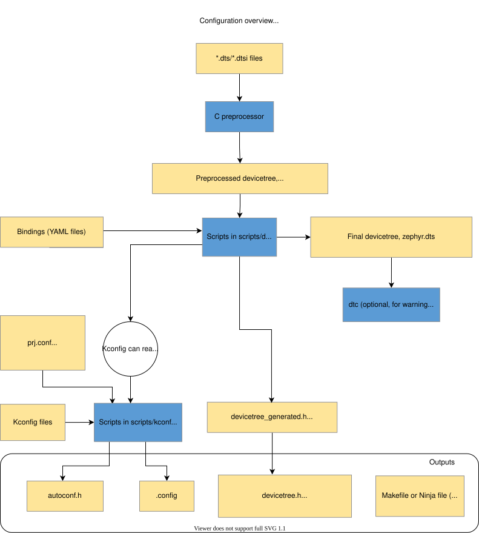
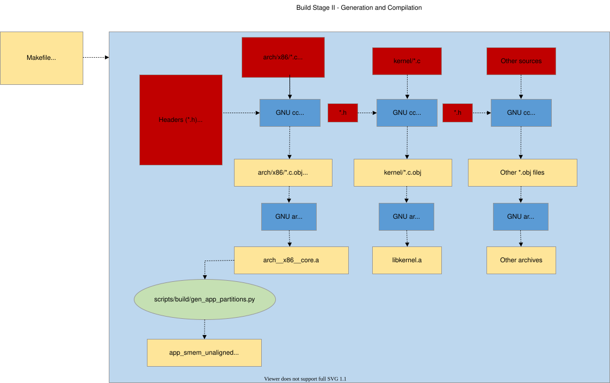
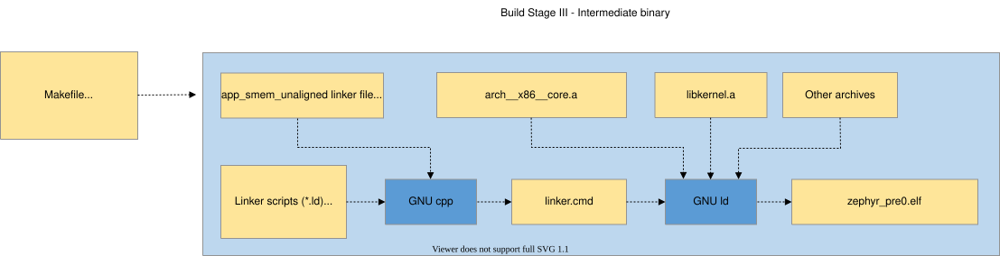
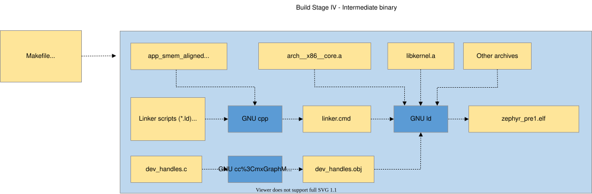
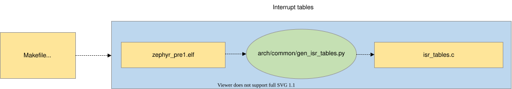
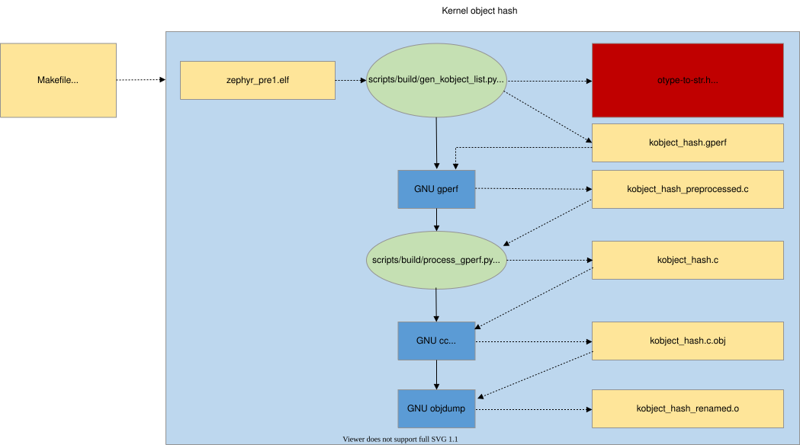
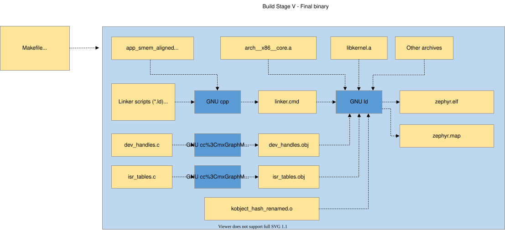
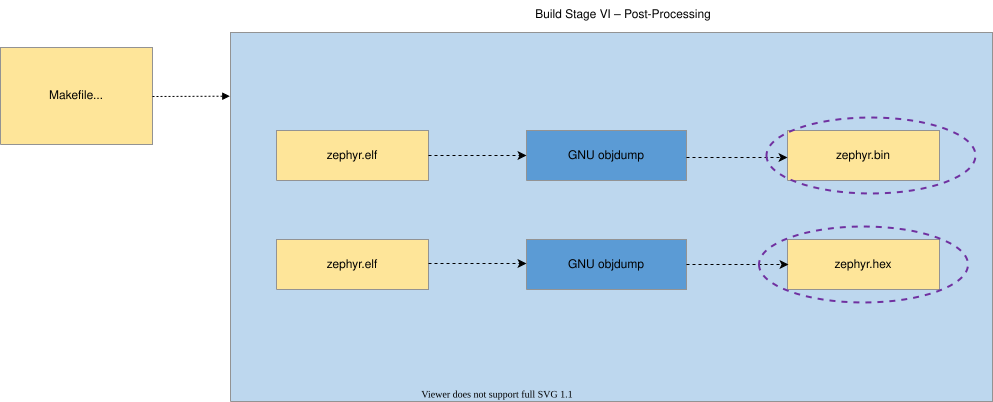

Build System (CMake)
CMake is used to build your application together with the Zephyr kernel. A CMake build is done in two stages. The first stage is called configuration. During configuration, the CMakeLists.txt build scripts are executed. After configuration is finished, CMake has an internal model of the Zephyr build, and can generate build scripts that are native to the host platform.
CMake supports generating scripts for several build systems, but only Ninja and Make are tested and supported by Zephyr. After configuration, you begin the build stage by executing the generated build scripts. These build scripts can recompile the application without involving CMake following most code changes. However, after certain changes, the configuration step must be executed again before building. The build scripts can detect some of these situations and reconfigure automatically, but there are cases when this must be done manually.
Zephyr uses CMake’s concept of a ‘target’ to organize the build. A target can be an executable, a library, or a generated file. For application developers, the library target is the most important to understand. All source code that goes into a Zephyr build does so by being included in a library target, even application code.
Library targets have source code, that is added through CMakeLists.txt build scripts like this:
target_sources(app PRIVATE src/main.c)
In the above CMakeLists.txt, an existing library target named app
is configured to include the source file src/main.c. The PRIVATE
keyword indicates that we are modifying the internals of how the library is
being built. Using the keyword PUBLIC would modify how other
libraries that link with app are built. In this case, using PUBLIC
would cause libraries that link with app to also include the
source file src/main.c, behavior that we surely do not want. The
PUBLIC keyword could however be useful when modifying the include
paths of a target library.
When introducing build system code using CMake or adding new CMake files, please follow the style guidelines outlined here.
Build and Configuration Phases
The Zephyr build process can be divided into two main phases: a configuration phase (driven by CMake) and a build phase (driven by Make or Ninja).
Configuration Phase
The configuration phase begins when the user invokes CMake to generate a build system, specifying a source application directory and a board target.
{kind=link}

CMake begins by processing the CMakeLists.txt file in the application
directory, which refers to the CMakeLists.txt file in the Zephyr
top-level directory, which in turn refers to CMakeLists.txt files
throughout the build tree (directly and indirectly). Its primary output is a
set of Makefiles or Ninja files to drive the build process, but the CMake
scripts also do some processing of their own, which is explained here.
Note that paths beginning with build/ below refer to the build
directory you create when running CMake.
- Devicetree
*.dts(devicetree source) and*.dtsi(devicetree source include) files are collected from the target’s architecture, SoC, board, and application directories.*.dtsifiles are included by*.dtsfiles via the C preprocessor (often abbreviated cpp, which should not be confused with C++). The C preprocessor is also used to merge in any devicetree*.overlayfiles, and to expand macros in*.dts,*.dtsi, and*.overlayfiles. The preprocessor output is placed inbuild/zephyr/zephyr.dts.pre.The preprocessed devicetree sources are parsed by gen_defines.py to generate a
build/zephyr/include/generated/zephyr/devicetree_generated.hheader with preprocessor macros.Source code should access preprocessor macros generated from devicetree by including the devicetree.h header, which includes
devicetree_generated.h.gen_defines.pyalso writes the final devicetree tobuild/zephyr/zephyr.dtsin the build directory. This file’s contents may be useful for debugging.If the devicetree compiler
dtcis installed, it is run onbuild/zephyr/zephyr.dtsto catch any extra warnings and errors generated by this tool. The output fromdtcis unused otherwise, and this step is skipped ifdtcis not installed.The above is just a brief overview. For more information on devicetree, see Devicetree Guide.
- Kconfig
Kconfigfiles define available configuration options for the target architecture, SoC, board, and application, as well as dependencies between options.Kconfig configurations are stored in configuration files. The initial configuration is generated by merging configuration fragments from the board and application (e.g.
prj.conf).The output from Kconfig is an
autoconf.hheader with preprocessor assignments, and a.configfile that acts both as a saved configuration and as configuration output (used by CMake). The definitions inautoconf.hare automatically exposed at compile time, so there is no need to include this header.Information from devicetree is available to Kconfig, through the functions defined in kconfigfunctions.py.
See the Kconfig section of the manual for more information.
Build Phase
The build phase begins when the user invokes make or ninja. Its
ultimate output is a complete Zephyr application in a format suitable for
loading/flashing on the desired target board (zephyr.elf,
zephyr.hex, etc.) The build phase can be broken down, conceptually,
into four stages: the pre-build, first-pass binary, final binary, and
post-processing.
Pre-build
Pre-build occurs before any source files are compiled, because during this phase header files used by the source files are generated.
- Build-time constants generation
Some constants must be derived from C struct layouts at build time rather than hardcoded. The CMake function
zephyr_constants_library()automates this: it compiles a C source file containingGEN_ABSOLUTE_SYM()declarations into an OBJECT library, then runsgen_offset_header.pyto extract symbols ending in_OFFSETor_SIZEOFand emit them as#definelines in a generated header underinclude/generated/zephyr/.This mechanism is used in two places:
offsets.h: Architecture-specific offsets for assembly code that needs access to high-level data structures when the definitions of those structures are not immediately accessible. The source file is
arch/<arch>/core/offsets/offsets.c.heap_constants.h: Heap sizing constants (
Z_HEAP_MIN_SIZE,Z_HEAP_MIN_SIZE_FOR) computed from actual heap struct layouts, replacing previously hardcoded values inkernel.h. The source file islib/heap/heap_constants.c.
To add new build-time constants, create a C source file that includes
<gen_offset.h>and usesGEN_ABSOLUTE_SYM()to declare each constant, then callzephyr_constants_library()from yourCMakeLists.txt. If the new library’s source includes a header generated by another constants library, use theDEPENDSparameter to declare that ordering (e.g.,DEPENDS heap_constants). The resulting OBJECT library can also be linked into the final binary (as offsets.h does via$<TARGET_OBJECTS:offsets>in linker scripts).- System call boilerplate
The gen_syscall.py and parse_syscalls.py scripts work together to bind potential system call functions with their implementations.
{kind=link}

Intermediate binaries
Compilation proper begins with the first intermediate binary. Source files (C and assembly) are collected from various subsystems (which ones is decided during the configuration phase), and compiled into archives (with reference to header files in the tree, as well as those generated during the configuration phase and the pre-build stage(s)).
{kind=link}

The exact number of intermediate binaries is decided during the configuration phase.
If memory protection is enabled, then:
- Partition grouping
The gen_app_partitions.py script scans all the generated archives and outputs linker scripts to ensure that application partitions are properly grouped and aligned for the target’s memory protection hardware.
Then cpp is used to combine linker script fragments from the target’s architecture/SoC, the kernel tree, optionally the partition output if memory protection is enabled, and any other fragments selected during the configuration process, into a linker.cmd file. The compiled archives are then linked with ld as specified in the linker.cmd.
- Unfixed size binary
The unfixed size intermediate binary is produced when User Mode is enabled or Devicetree is in use. It produces a binary where sizes are not fixed and thus it may be used by post-process steps that will impact the size of the final binary.
{kind=link}

- Fixed size binary
The fixed size intermediate binary is produced when User Mode is enabled or when generated IRQ tables are used,
CONFIG_GEN_ISR_TABLESIt produces a binary where sizes are fixed and thus the size must not change between the intermediate binary and the final binary.
{kind=link}

Intermediate binaries post-processing
The binaries from the previous stage are incomplete, with empty and/or placeholder sections that must be filled in by, essentially, reflection.
To complete the build procedure the following scripts are executed on the intermediate binaries to produce the missing pieces needed for the final binary.
When User Mode is enabled:
- Partition alignment
The gen_app_partitions.py script scans the unfixed size binary and generates an app shared memory aligned linker script snippet where the partitions are sorted in descending order.
{kind=link}
When Devicetree is used:
- Device dependencies
The gen_device_deps.py script scans the unfixed size binary to determine relationships between devices that were recorded from devicetree data, and replaces the encoded relationships with values that are optimized to locate the devices actually present in the application.
{kind=link}
- When
CONFIG_GEN_ISR_TABLESis enabled: The gen_isr_tables.py script scans the fixed size binary and creates an isr_tables.c source file with a hardware vector table and/or software IRQ table.
{kind=link}

When User Mode is enabled:
- Kernel object hashing
The gen_kobject_list.py scans the ELF DWARF debug data to find the address of the all kernel objects. This list is passed to gperf, which generates a perfect hash function and table of those addresses, then that output is optimized by process_gperf.py, using known properties of our special case.
{kind=link}

When no intermediate binary post-processing is required then the first intermediate binary will be directly used as the final binary.
Final binary
The binary from the previous stage is incomplete, with empty and/or placeholder sections that must be filled in by, essentially, reflection.
The link from the previous stage is repeated, this time with the missing pieces populated.
{kind=link}

Post processing
Finally, if necessary, the completed kernel is converted from ELF to the format expected by the loader and/or flash tool required by the target. This is accomplished in a straightforward manner with objdump.
{kind=link}

Supporting Scripts and Tools
The following is a detailed description of the scripts used during the build process.
scripts/build/gen_syscalls.py
Script to generate system call invocation macros
This script parses the system call metadata JSON file emitted by parse_syscalls.py to create several files:
A file containing weak aliases of any potentially unimplemented system calls, as well as the system call dispatch table, which maps system call type IDs to their handler functions.
A header file defining the system call type IDs, as well as function prototypes for all system call handler functions.
A directory containing header files. Each header corresponds to a header that was identified as containing system call declarations. These generated headers contain the inline invocation functions for each system call in that header.
scripts/build/gen_device_deps.py
Translate generic handles into ones optimized for the application.
Immutable device data includes information about dependencies, e.g. that a particular sensor is controlled through a specific I2C bus and that it signals event on a pin on a specific GPIO controller. This information is encoded in the first-pass binary using identifiers derived from the devicetree. This script extracts those identifiers and replaces them with ones optimized for use with the devices actually present.
For example the sensor might have a first-pass handle defined by its devicetree ordinal 52, with the I2C driver having ordinal 24 and the GPIO controller ordinal 14. The runtime ordinal is the index of the corresponding device in the static devicetree array, which might be 6, 5, and 3, respectively.
The output is a C source file that provides alternative definitions for the array contents referenced from the immutable device objects. In the final link these definitions supersede the ones in the driver-specific object file.
scripts/build/gen_kobject_list.py
Script to generate gperf tables of kernel object metadata
User mode threads making system calls reference kernel objects by memory address, as the kernel/driver APIs in Zephyr are the same for both user and supervisor contexts. It is necessary for the kernel to be able to validate accesses to kernel objects to make the following assertions:
That the memory address points to a kernel object
The kernel object is of the expected type for the API being invoked
The kernel object is of the expected initialization state
The calling thread has sufficient permissions on the object
For more details see the Kernel Objects section in the documentation.
The zephyr build generates an intermediate ELF binary, zephyr_prebuilt.elf, which this script scans looking for kernel objects by examining the DWARF debug information to look for instances of data structures that are considered kernel objects. For device drivers, the API struct pointer populated at build time is also examined to disambiguate between various device driver instances since they are all ‘struct device’.
This script can generate five different output files:
A gperf script to generate the hash table mapping kernel object memory addresses to kernel object metadata, used to track permissions, object type, initialization state, and any object-specific data.
A header file containing generated macros for validating driver instances inside the system call handlers for the driver subsystem APIs.
A code fragment included by kernel.h with one enum constant for each kernel object type and each driver instance.
The inner cases of a switch/case C statement, included by kernel/userspace.c, mapping the kernel object types and driver instances to their human-readable representation in the otype_to_str() function.
The inner cases of a switch/case C statement, included by kernel/userspace.c, mapping kernel object types to their sizes. This is used for allocating instances of them at runtime (CONFIG_DYNAMIC_OBJECTS) in the obj_size_get() function.
scripts/build/gen_offset_header.py
This script scans a specified object file and generates a header file
that defined macros for the offsets of various found structure members
(particularly symbols ending with _OFFSET or _SIZEOF), primarily
intended for use in assembly code.
scripts/build/parse_syscalls.py
Script to scan Zephyr include directories and emit system call and subsystem metadata
System calls require a great deal of boilerplate code in order to implement completely. This script is the first step in the build system’s process of auto-generating this code by doing a text scan of directories containing C or header files, and building up a database of system calls and their function call prototypes. This information is emitted to a generated JSON file for further processing.
This script also scans for struct definitions such as __subsystem and __net_socket, emitting a JSON dictionary mapping tags to all the struct declarations found that were tagged with them.
If the output JSON file already exists, its contents are checked against what information this script would have outputted; if the result is that the file would be unchanged, it is not modified to prevent unnecessary incremental builds.
arch/x86/gen_idt.py
Generate Interrupt Descriptor Table for x86 CPUs.
This script generates the interrupt descriptor table (IDT) for x86. Please consult the IA Architecture SW Developer Manual, volume 3, for more details on this data structure.
This script accepts as input the zephyr_prebuilt.elf binary, which is a link of the Zephyr kernel without various build-time generated data structures (such as the IDT) inserted into it. This kernel image has been properly padded such that inserting these data structures will not disturb the memory addresses of other symbols. From the kernel binary we read a special section “intList” which contains the desired interrupt routing configuration for the kernel, populated by instances of the IRQ_CONNECT() macro.
This script outputs three binary tables:
The interrupt descriptor table itself.
A bitfield indicating which vectors in the IDT are free for installation of dynamic interrupts at runtime.
An array which maps configured IRQ lines to their associated vector entries in the IDT, used to program the APIC at runtime.
arch/x86/gen_gdt.py
Generate a Global Descriptor Table (GDT) for x86 CPUs.
For additional detail on GDT and x86 memory management, please consult the IA Architecture SW Developer Manual, vol. 3.
This script accepts as input the zephyr_prebuilt.elf binary, which is a link of the Zephyr kernel without various build-time generated data structures (such as the GDT) inserted into it. This kernel image has been properly padded such that inserting these data structures will not disturb the memory addresses of other symbols.
The input kernel ELF binary is used to obtain the following information:
Memory addresses of the Main and Double Fault TSS structures so GDT descriptors can be created for them
Memory addresses of where the GDT lives in memory, so that this address can be populated in the GDT pseudo descriptor
whether userspace or HW stack protection are enabled in Kconfig
The output is a GDT whose contents depend on the kernel configuration. With no memory protection features enabled, we generate flat 32-bit code and data segments. If hardware- based stack overflow protection or userspace is enabled, we additionally create descriptors for the main and double- fault IA tasks, needed for userspace privilege elevation and double-fault handling. If userspace is enabled, we also create flat code/data segments for ring 3 execution.
scripts/build/gen_relocate_app.py
This script will relocate .text, .rodata, .data and .bss sections from required files and places it in the required memory region. This memory region and file are given to this python script in the form of a file. A regular expression filter can be applied to select only the required sections from the file.
Example of content in such an input file would be:
SRAM2:COPY:/home/xyz/zephyr/samples/hello_world/src/main.c,.*foo|.*bar
SRAM1:COPY:/home/xyz/zephyr/samples/hello_world/src/main2.c,.*bar
FLASH2:NOCOPY:/home/xyz/zephyr/samples/hello_world/src/main3.c,
One can also specify the program header for a given memory region:
SRAM2\ :phdr0:COPY:/home/xyz/zephyr/samples/hello_world/src/main.c,
To invoke this script:
python3 gen_relocate_app.py -i input_file -o generated_linker -c generated_code
Configuration that needs to be sent to the python script.
If the memory is like SRAM1/SRAM2/CCD/AON then place full object in the sections
If the memory type is appended with _DATA / _TEXT/ _RODATA/ _BSS only the selected memory is placed in the required memory region. Others are ignored.
COPY/NOCOPY defines whether the script should generate the relocation code in code_relocation.c or not
NOKEEP will suppress the default behavior of marking every relocated symbol with KEEP() in the generated linker script.
Multiple regions can be appended together like SRAM2_DATA_BSS this will place data and bss inside SRAM2.
scripts/build/process_gperf.py
gperf C file post-processor
We use gperf to build up a perfect hashtable of pointer values. The way gperf does this is to create a table ‘wordlist’ indexed by a string representation of a pointer address, and then doing memcmp() on a string passed in for comparison
We are exclusively working with 4-byte pointer values. This script adjusts the generated code so that we work with pointers directly and not strings. This saves a considerable amount of space.
scripts/build/gen_app_partitions.py
Script to generate a linker script organizing application memory partitions
Applications may declare build-time memory domain partitions with K_APPMEM_PARTITION_DEFINE, and assign globals to them using K_APP_DMEM or K_APP_BMEM macros. For each of these partitions, we need to route all their data into appropriately-sized memory areas which meet the size/alignment constraints of the memory protection hardware.
This linker script is created very early in the build process, before the build attempts to link the kernel binary, as the linker script this tool generates is a necessary pre-condition for kernel linking. We extract the set of memory partitions to generate by looking for variables which have been assigned to input sections that follow a defined naming convention. We also allow entire libraries to be pulled in to assign their globals to a particular memory partition via command line directives.
This script takes as inputs:
The base directory to look for compiled objects
key/value pairs mapping static library files to what partitions their globals should end up in.
The output is either a linker script fragment or linker-script generator fragments containing the definition of the app shared memory section, which is further divided, for each partition found, into data and BSS for each partition.
scripts/build/check_init_priorities.py
Checks the initialization priorities
This script parses a Zephyr executable file, creates a list of known devices and their effective initialization priorities and compares that with the device dependencies inferred from the devicetree hierarchy.
This can be used to detect devices that are initialized in the incorrect order, but also devices that are initialized at the same priority but depends on each other, which can potentially break if the linking order is changed.
Optionally, it can also produce a human readable list of the initialization calls for the various init levels.